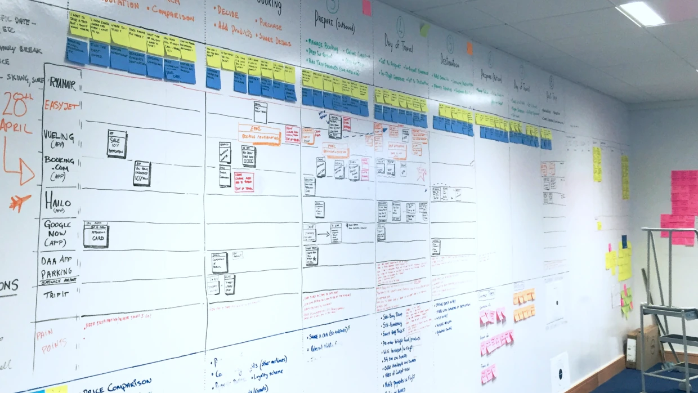
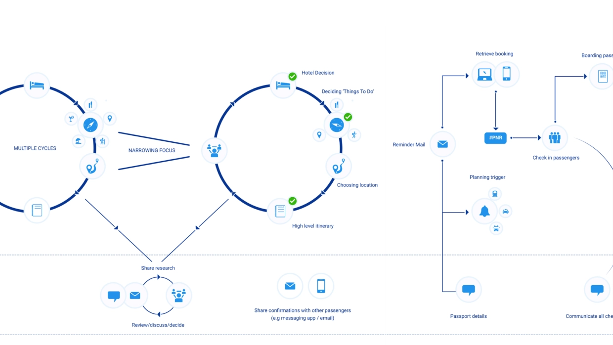
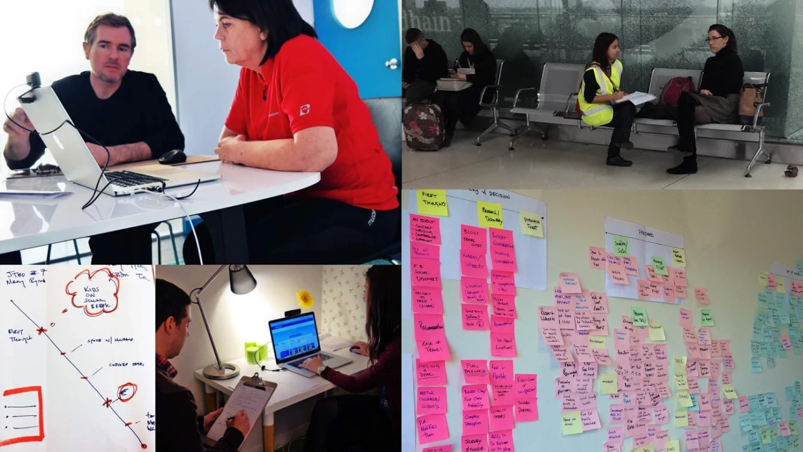
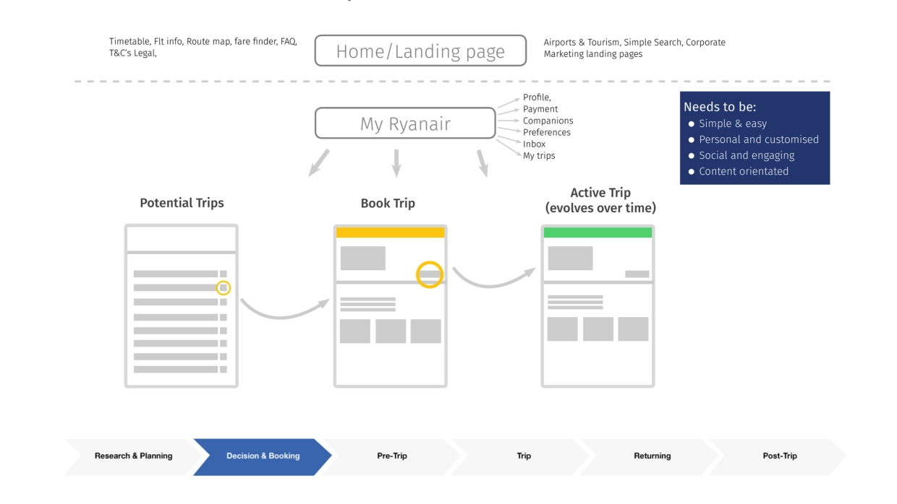
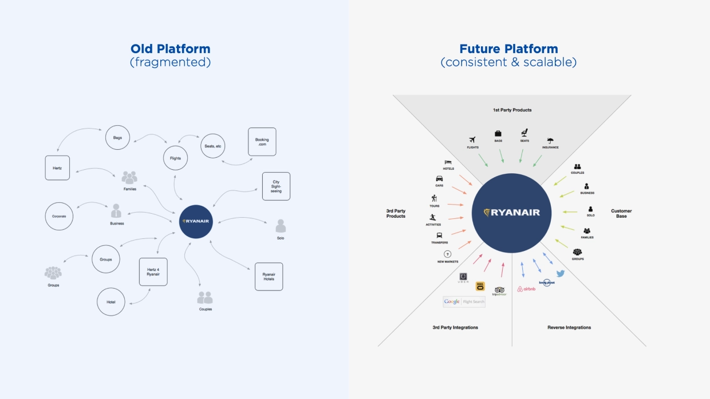
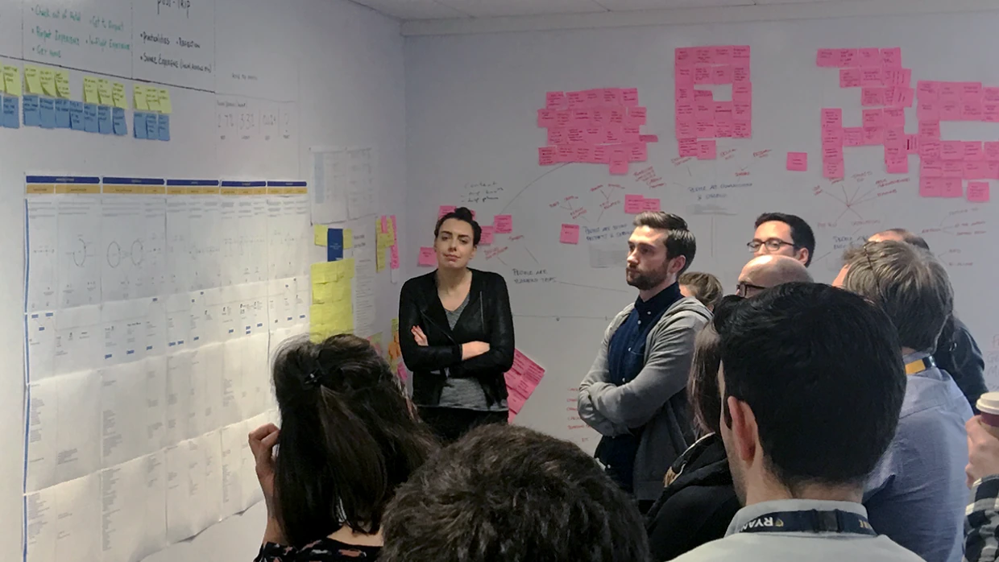
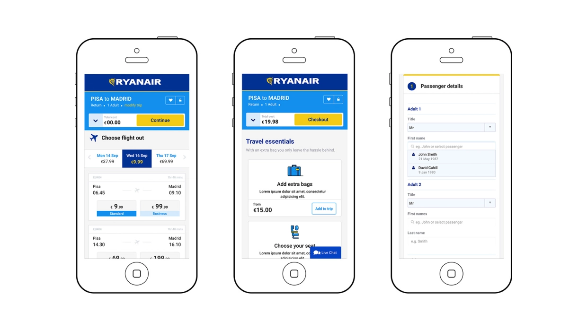

Ryanair • Head of UX
Reframing a fragmented travel experience through design and research

Ryanair is Europe’s largest airline, built on an uncompromising focus on cost efficiency and scale. By the time I joined as the company’s first Head of UX, that model had driven significant growth, but customer experience had become a constraint.
The core issue was not a single product problem, but a fragmented end to end journey. Customers experienced disconnected touchpoints across booking, airport, and inflight interactions, alongside low trust in the brand and increasing friction at key moments. With growing competition and two profit warnings, improving customer experience became critical to unlocking further growth.
I was brought in to build the design function from scratch and redefine the customer experience, not just at the level of interfaces, but across the entire travel journey.
A key early step was introducing a service design approach into the organisation. Rather than focusing purely on digital touchpoints, we mapped the end to end customer journey, from trip planning through to airport experience and arrival. This work exposed disconnects between product, operations, customer service, and airport interactions, and created a shared view of the experience across previously siloed teams.

User research was central to this shift. We ran continuous research with passengers, both remotely and in context at airport terminals, using a Jobs To Be Done lens to carry out interviews and understand underlying motivations, anxieties, and decision making behaviours. I embedded these practices within the team, ensuring research became a core input into product and strategic decisions rather than a one off activity.

This work revealed that the primary issues were systemic rather than isolated usability problems, including low trust in the brand, fragmented digital experiences, and a journey that placed high cognitive and operational burden on customers.
In response, I helped reframe how the organisation understood the problem, shaping what became the trip model. Moving beyond a flights and ancillaries mindset, this model repositioned the experience as a continuous journey, creating a shared language across teams and enabling more joined up thinking across the lifecycle of travel.

From this foundation, we defined a product and service strategy centred on three principles: a trips based model, a centralised platform, and personalisation. This shifted Ryanair from a set of disconnected transactions to a more coherent system, capable of supporting customers across their journey, integrating third party services, and evolving over time. Personalisation was key, moving from booking reference interactions to a more persistent, account based relationship.

Alongside defining the strategy, I built and led a multidisciplinary design team, growing it from 1 to 11 within a year. We embedded service design and research practices, introduced design principles, and worked closely with product, engineering, operations, and leadership to align around a more customer centred approach. The strategy was adopted at board level and used to inform organisational structure, priorities, and investment.
We rapidly translated this strategy into delivery, launching new iOS and Android apps alongside a responsive web platform. These changes simplified the customer journey, improved trust at key moments, and reduced friction across booking and travel.


Outcomes
- +2.2% increase in booking conversion
- +190% increase in mobile web conversion
- +160% increase in native app conversion
- #1 most downloaded travel app in Europe, 17M downloads
- Built Ryanair’s first UX team, 1 to 11 designers in under 12 months
- Delivered web and mobile platforms in under 8 months